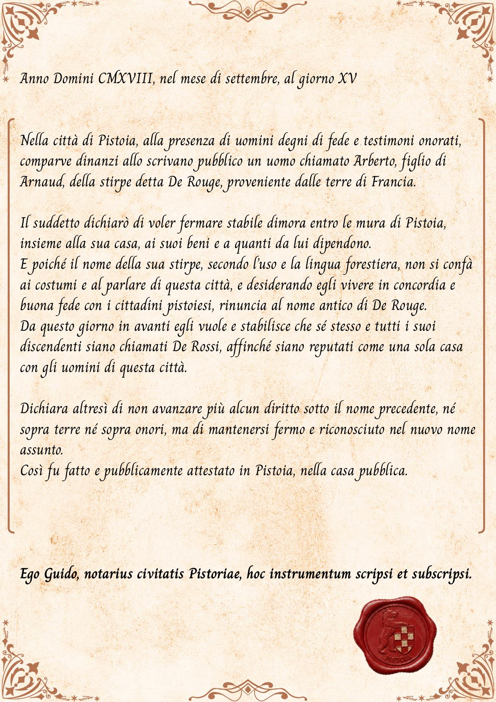
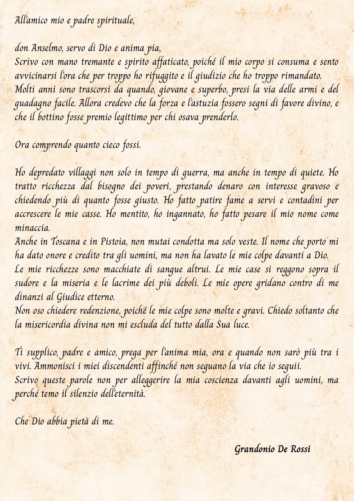

Le mie memorie
di Philippe De Rouge
Pistoia, 2025
1
Sabato 18 Ottobre.
Giungo finalmente nella città di Pistoia. Amèlie mi raggiungerà tra poco, quando avrà terminato il suo lavoro a Parigi.
Il mio lavoro di ricerca qui sarà finanziato dalla fondazione che cura i musei cittadini e l'uomo che mi riceve si chiama Marco Vezzosi. Mi sembra un brav'uomo, degno di fiducia, al contempo serio e piacevolmente divertente. Sono certo che ci troveremo bene assieme.
Oggi è un sabato caldo, nonostante l'autunno alle porte e già lunedì Marco mi porterà in giro per i musei e mi mostrerà la città.
Non vedo l'ora!
2
Martedì 21 Ottobre.
Sono entusiasta della città e delle sue bellezze.
Anche se i documenti che dovrò visionare mi sembrano un poco abbandonati e mi chiedo come mai nessuno li abbia visionati, sono però entusiasta che l'offerta di occuparmene sia capitata a me. Probabilmente devo tutto a quel lavoro di archivio svolto l'anno scorso a Carcassonne.
Sia come sia, mi darò da fare.
3
Venerdì 24 Ottobre.
I documenti che sto visionando sono stati accantonati pochi anni prima dello scoppio della seconda guerra mondiale, da quel che ho capito, rimanendo inscatolati per quasi novant'anni; li hanno riscoperti in seguito a una riorganizzazione delle biblioteche cittadine.
Parlano prevaentemente delle grandi famiglie che hanno fatto la storia della città nel medioevo; ci sono alcuni documenti o copie di essi che risultano addirittura antecedenti all'anno 1000, quando ancora la città non era un libero comune.
Sono prevalentemente atti legali, compravendite, accordi commerciali, registrazioni natali, ma ci sono anche alcune raccolte epistolari.
E' molto interessante per uno storico come me, ma non so quanto possa risultarlo per chi invece non lo è. Probabilmente se dovessi riportare le mie ricerche a qualcuno al di fuori dell'ambito, non capirebbe perché io sia così emozionato all'idea di questo impegno. Anche mia moglie, quando sono andata a prenderla in aereoporto, mi ha detto che se continuo a parlare solo del nuovo lavoro se ne tornerà diretta in Francia. Per fortuna scherzava.
4
🔐
Sezione Bloccata
Questo diario contiene segreti più profondi di quanto sembri.
Inserisci il Codice
Sabato 1 Novembre.
Non credevo ai miei occhi quando ho trovato i due documenti.
Erano ravvicinati. Probabilmente chi aveva avviato la catalogazione nel 1938 e non era riuscito a portarla a termine si era già accorto del collegamento.
A me sono saltati all'occhio per via del cognome. D'altronde se su un documento di poco successivo all'anno 1000 ti capita di vedere il tuo cognome nero su bianco, come fai a non notarlo?
Mio nonno mi aveva raccontato un sacco di cose della vicenda di famiglia, ma finché non ho visto il documento non sono arrivato a fare due più due. E che dire della lettera? E' proprio vero che la mela non cade mai troppo lontana dall'albero.
Ieri ho fatto tutte le verifiche del caso, chiamando gli archivi di Parigi, che confermano la vicenda e oggi ho fissato un incontro con Vezzosi per parlarne, questo lunedì.
5
🔐
Sezione Bloccata
Prosegui sblocccando il diario...
Oramai ogni crimine è ampiamente caduto in prescrizione, ma non vedo perché non divulgare la cosa; certo, è un po' paradossale che la famiglia che mi ha pagato per venire a lavorare a Pistoia riceva questa bella doccia fredda, ma la cosa non si può evitare. La verità è ben più importante.
Lunedì 3 Novembre.
Marco è stato comprensivo circa l'importanza della cosa e mi aiuterà come può.
Ha accettato di attendere a divulgare la cosa oltre noi, finché non avrò finito di catalogare i documenti, controllato le fonti e chiarito i dubbi. Pare ci siano delle discrete discrepanze tra quello che dice la lettera e gli atti ufficiali, per cui il tutto merita un'indagine approfondita. Io non l'ho detto neppure ad Amèlie, per non sentirmi in difetto per la richiesta che ho fatto.
Fosse reale, forse alla famiglia potrebbe toccare anche versare qualche risarcimento.
6
Giovedì 6 Novembre.
Oggi ho ricevuto una visita in ufficio.
Il presidente della fondazione, il signor De Rossi in persona, si è presentato da me.
Vezzosi gli aveva riferito della mia scoperta, anche se aveva acconsentito a non dire in giro della cosa. Il signor De Rossi è stato garbato al principio, facendomi molti elogi per il mio modo di lavorare e per la mia professionalità.
Poi mi ha detto che per chi si dimostra disponibile a tutelare certi interessi, con un curriculum come il mio, potrebbero esserci offerte lavorative ben retribuite. E ha parlato di cifre che farebbero impallidire ogni ricercatore.
A quel punto i suoi discorsi si sono fatti più strani. Ha parlato della necessità di fidarsi e di poter chiedere cortesie, come si fa tra amici, o tra persone che si rispettano "grandemente".
Ero troppo stupito per altro che una richiesta di chiarezza.
7
Ed è stato chiaro. Vorrebbe che gli consegnassi i documenti e che non ne facessi parola con nessuno, in cambio di un lavoro che mi assicurerà la vecchiaia e mi concederà di poter fare una bella vita senza preoccupazioni.
Ero indignato e glielo ho detto.
Lui non ha aggiunto altro.
Se ne è andata in silenzio, ma si vedeva che era arrabbiato per la mia risposta.
8
Mercoledì 12 Novembre.
Mentre uscivo dagli uffici sono stato avvicinato da due uomini.
Prima che salissi sulla mia macchina mi hanno afferrato e picchiato. Mi hanno portato via la cartellina e anche una scatola di documenti che stava sul sedile posteriore della macchina.
Poi mi hanno detto che se io non volevo tornassero, potevo consegnare ogni altro documento al gentiluomo che già mi aveva fatto visita.
Uno dei due mi ha anche mostrato un distintivo da poliziotto, chiarendomi che non mi conveniva fare lo stronzo… perché sarebbe venuto lui a redigere il verbale, se avessi voluto sporgere denuncia.
Quando se ne sono andati sono salito in auto e sono andato di volata a casa, dopo aver controllato per messaggio che Amèlie fosse fuori. Mi sono chiuso la porta alle spalle e ho guardato i documenti, sul tavolo del cucinino, dicendomi che dovevo nasconderli… per cui l'ho fatto subito, anche se non al sicuro come vorrei. Stanotte non riuscirò a dormire, lo so.
Sono nei guai. In grossi guai.
Se De Rossi è disposto ad arrivare a questo punto per quelle carte, la cosa deve avere ben più ricadute di quante immaginavo; eppure non intendo lasciarglieli.
9
Io non sono disposto a sacrificare la verità… non riuscirei più a guardarmi allo specchio la mattina, altrimenti.
Ma sono certo di non poter neppure tornare a far finta di nulla.
Quando se ne sono andati sono salito in auto e sono andato di volata a casa. Mi sono chiuso la porta alle spalle e ho guardato i documenti, sul tavolo del cucinino, dicendomi che dovevo nasconderli… per cui l'ho fatto subito, anche se non al sicuro come vorrei. Stanotte non riuscirò a dormire, lo so.
Sono nei guai. In grossi guai.
Se De Rossi è disposto ad arrivare a questo punto per quelle carte, la cosa deve avere ben più ricadute di quante immaginavo; eppure non intendo lasciarglieli. Io non sono disposto a sacrificare la verità… non riuscirei più a guardarmi allo specchio la mattina, altrimenti.
Ma sono certo di non poter neppure tornare a far finta di nulla.
Tra le lettere della vostra mappa ve n'è una in cui ho lasciato l'ultimo dei frammenti da scoprire; si tratta, invero, dell'anno di una certa data.
Agatha Christie
10
Venerdì 15 Novembre.
Palazzo dei Vescovi.
Forse non dovrei scrivere, non qui e certamente non in questo momento, ma il silenzio di queste mura mi pesa addosso molto più della paura stessa; è un silenzio innaturale, simile a quello di chi trattiene il respiro per evitare di essere scoperto.
Sono venuto a Palazzo dei Vescovi cercando coerenza, l'unica moneta che noi archeologi inseguiamo davvero tra le macerie, perché la storia ufficiale della città somiglia a un abito cerimoniale troppo stretto, cucito per nascondere le ferite e le cuciture malfatte dei secoli. Ho trascorso ore nei sotterranei, scivolando tra le stratificazioni che scendono fino al cuore etrusco di Pistoia, senza che l'infinita grandezza della storia portasse al mio cuore la pace come fa solitamente.
Allora sono salito fino all'arazzo Millefiori e mi sono seduto nel silenzio della sala vuota, lasciando che il mio sguardo si perdesse, nella speranza che la quiete tornasse.
11
Ma anche qui mi sono sentito solo braccato, come uno dei conigli intessuti nell'arazzo… spaventato e braccato, ma senza una tana in cui nascondermi.
Poi uno dei custodi è venuto ad avvisarmi per la chiusura ed io sono sobbalzato al suono della sua voce. Devo trovare una soluzione.
12
Mercoledì 19 novembre.
Ho trovato un biglietto quando sono tornato dalla pausa pranzo. Diceva solo "Possiamo aspettare, ma solo per poco ancora. Il tuo silenzio non è molto gentile pertanto ci chiediamo che senso abbia che lo siamo noi."
Sono uscito da lavoro prima.
La porta di casa mia era aperta e le mie cose sparse in giro. Avevano cercato ovunque. Mi sono affrettato a sistemare prima che Amèlie vedesse quel che era successo. Non riesco a pensare di dirle cosa sta succedendo, anche se non so come fare a nosconderglielo ancora.
Mi sono sentito male e sono uscito per una passeggiata in centro.
Le teste in giro per la città, sui monumenti e sulle chiese, parevano guardarmi. Sono finito vicino alle poste… un palazzo di epoca fascista… sul retro c'era una statua che avevo visto come calco al museo De Rossi. Mentre c'era chi accumulava oro, la città soffriva. Così mi sono fermato davanti agli "Scioperanti" di Andrea Lippi.
13
È un'opera omerica, tragica: un uomo che ne porta un altro sulle spalle, un peso che non è solo carne, ma il simbolo di una Pistoia piegata dalla fame e dai debiti. In questo gesso del 1913 c'è più verità che in tutti i fregi dorati dei palazzi nobiliari. Si sente il contrasto violento con il dinamismo futurista di Nannini: da una parte la realtà nuda, dall'altra la maschera del progresso che i padroni volevano imporre.
La maschera contro la verità.
Voglio anch'io arrendermi? Mettermi la maschera e cedere alla paura del dolore?
Non lo so. Non ho questa risposta. Non mi considero un uomo coraggioso, ma solo uno che vuol fare bene il suo lavoro.
Domenica 23 Novembre.
Ho preso una decisione. Non cederò alle minacce.
Ho iniziato ad elaborare un piano. Domani scriverò ai giornali locali. Ad un mese da oggi la verità sarà chiara a tutti e questo clima di terrore finirà.
14
Venerdì 27 Novembre.
Oggi camminavo per il centro di Pistoia.
Un uomo ha fatto per avvicinarmi. Somigliava a quello che mi ha aspettato vicino all'auto, quel giorno; io ho gridato terrorizzato e mentre scappavo l'ho sentito urlare che voleva soltanto sapere che ore fossero.
Ma ormai era tardi.
Il terrore aveva avuto la meglio e mi sembrava che ogni persona che incrociavo mi stesse guardando.
Così sono corso a rintanarmi nel piazzale di Palazzo De' Rossi e poi nel museo. E' stato come addentrarsi in una tana di lupi vestiti di seta. Qui la magnificenza non è un semplice fregio, ma una clava usata per stordire il visitatore; gli affreschi non raccontano una storia, ma la impongono brutalmente, schiacciandoci sotto il peso di una nobiltà che si pretende divina. Poi, quando sono entrato, era come se l'aria dentro fosse diversa, più rarefatta, carica di un'eleganza che sembra voler nascondere qualcosa di torbido. Appena varcata la soglia, mi sono sentito osservato: non dai custodi, ma da quegli omini in rosso di Roberto Barni.
15
🔐
Sezione Segreta
Continua il resoconto di ciò che accadde...
Inserisci il Codice
Sembrano sentinelle immobili, testimoni di un segreto che non possono pronunciare. Mi chiedo se siano lì per dare il benvenuto o per contare quanti, come me, osano avventurarsi oltre il confine della versione ufficiale. Sono il primo monito: in questa casa, anche l'arte ha occhi che ti seguono.
Mi sentivo sempre più soffocare.
Braccato, nonostante le decisioni prese, al pensiero che alla fine decideranno di zittire quanto potrei dire e che faranno scomparire i documenti che ho trovato.
Ad un certo punto sono arrivato davanti ai Giocolieri di Marino Marini. Sono lì, in bilico, fragili eppure eterni. Mi ricordano la posizione in cui mi trovo io: un solo passo falso e tutto crollerà. Marini ha scolpito queste figure in anni diversi, eppure sembrano cercare la stessa identica
16
stabilità che i De Rossi hanno cercato di comprare con l'usura. C'è una differenza sottile tra il primo e il secondo giocoliere, un'evoluzione nel dolore e nella consapevolezza. Ho annotato le date; è nel tempo che si nasconde l'inganno.
Così alla fine sono uscito, osservando la statua di Grandonio.
Grandonio non è mai stato un eroe templare, è stata solo la loro più grande invenzione pubblicitaria per coprire i veri "tesori" accumulati tra queste mura. Nascosti dietro nomi di prestanome e confraternite, da qualche parte potrebbero esserci anche i registri della loro ascesa violenta fatta di strozzinaggio, usura metodica ed espropri di terre ai danni di famiglie ridotte alla fame da tassi d'interesse brutali. Grandonio è la maschera d'oro messa sul volto di un esattore spietato che ha comprato il silenzio della Chiesa e finanziato i muri di San Salvatore solo per lavarsi la coscienza, costruendo questo Palazzo come un monumento alla propria impunità.
Mi seguono apertamente ormai e sento il rumore di un motore acceso poco più in là; non hanno fretta perché sanno che non ho più posti dove scappare.
17
Ma ho deciso: tra pochi giorni invierò questo diario e copia delle mie ricerche ad una persona di fiducia, seminando altrove i miei appunti e i miei sospetti: se mi toglieranno di mezzo non potranno comunque fermare la Verità, che come l'acqua trova sempre una crepa per uscire.
Scrivo questo messaggio per te, per quando riceverai questo scritto. Ricordatelo sempre, vecchia amica: la nobiltà non è che un debito che nessuno ha mai avuto il coraggio di riscuotere.
18
Mercoledì 3 Dicembre.
Ho stilato una serie di idee per nascondere le mie annotazioni ed i documenti, disseminandoli per i musei e per le vie di Pistoia. Amèlie mi assillava dicendomi che ho qualcosa che non va, ma io ero troppo concentrato per risponderle e credo pensi che io abbia un amante. E forse preferisco questo a dirle cosa succede e magari farla agitare e spaventare quanto lo sono io.
Invierò a te, Agatha questi appunti assieme al diario perché possa farne buon uso, nel caso io decida di nascondere le prove.
Tu potrai ritrovarle se io non avrò avuto successo e decidere come far sì che la verità venga a galla.
Mi accorgo ora che, avendo deciso di inviarti il diario, non sto più scrivendo per me stesso. Ora scrivo per te, amica mia, perché il timore di non riuscire a portare a termine il mio lavoro è forte, ma so anche che tu hai la furbizia che a me manca e che potresti riuscire laddove io invece dovessi fallire.
19
Giovedì 11 Dicembre.
Ho nascosto il diario, gli appunti, la copia dei documenti e dei miei studi… Spero non serva, ma in caso, sii la mia ultima speranza.
Quel luogo è la casa di molti solidi chiusi, che se aperti rivelano interi mondi.
Agatha Christie
20
Mercoledì 17 Dicembre.
Ora che tutto è stato ben nascosto, mi sento meglio.
Ora mi concentro solo sul preparare la conferenza stampa, fissata ormai per il 23 Dicembre. Ho ripetuto il discorso e mi sono preparato per le domande.
Non esco quasi più, se non per la spesa e per il lavoro. Amèlie non mi dice più nulla… quasi avesse rinunciato a sperare che torni in me.
Io, intanto, cerco sempre di non farmi trovare solo…
Ieri sono stato alla chiesetta di San Salvatore, durante il lavoro, in un orario in cui ci fosse qualcuno.
21
Se c'è una cosa che ho imparato scavando è che la terra non mente mai, a differenza degli uomini che hanno trasformato la menzogna in una delle più sottili belle arti. Qui, nel Museo di San Salvatore, mi sento al sicuro e al contempo profondamente in trappola, circondato da una chiesa che è stata spogliata e rivelata come un corpo sezionato che mostra i suoi visceri di pietra.
Mentre risalivo le scale ho udito dei passi leggeri e ritmici; ho finto di osservare un capitello fermandomi di colpo e anche i passi si sono arrestati insieme a me. Ho cambiato direzione verso l'uscita laterale e loro hanno fatto lo stesso, con una logica spietata che non lascia spazio alla paranoia: se qualcuno si cura di seguirmi in un museo non deserto, significa che i miei occhi hanno visto ciò che doveva restare sepolto sotto tre metri di terra.
22
Allora ho preso a correre, incurante degli sguardi e delle parole della gente.
Quando sono rientrato agli uffici una delle ragazze mi ha chiamato. "Signor Philippe De Rouge, c'è un pacco per lei!"
Sono andato a prenderlo e scommetto che la povera ragazza avrà scambiato il mio sguardo terrorizzato con quello di un folle, dopo avermi visto arrivare trafelato e di corsa.
Ho aperto il pacco e c'era il contratto per il lavoro che mi era stato offerto, nero su bianco.
E un biglietto.
"Ancora per tre giorni, a vostra disposizione, se ritirate la conferenza. Altrimenti ritireremo noi l'offerta, con quel che ne consegue."
Ho iniziato a tremare.
Sono certo la ragazza fosse preoccupata. Poi sono andato di corsa a casa.
23
🔐
La Verità Conclusiva
Qui risiede il capitolo finale del diario di Philippe De Rouge.
Inserisci il Codice
Giovedì 18 Dicembre.
Questa è senza dubbio l'ultima annotazione che inserisco Agatha.
Troverai in una lettera a parte i dati dello studio approfondito su come ho nascosto per i musei tutto quello che ti servirà e le annotazioni su come potrai entrare senza essere vista, ma spero che una volta memorizzata la lettera in questione tu voglia farla sparire, prima di venire a Pistoia per recuperare i documenti. Non sia mai cada in mani sbagliate.
Oltre a questo ti lascio quest'ultimo messaggio.
Quando ho capito che questo ramo criminoso della mia stessa famiglia non era affatto cambiato negli ultimi circa mille anni, non volevo crederlo.
Ma non c'è molta differenza tra ciò che erano (briganti) e quello che sono oggi.
Potranno essersi rivestiti di una patina dorata, ma sotto emerge ancora il marcio di cui non si sono disfatti con cambi di nome, crociate da schiavisti e chi più ne ha più ne metta.
23
Per loro il fine giusticava l'abbietto mezzo allora e così fa oggi.
Tra pochi giorni sputerò sulla loro grandezza, sulle origini altisonanti e chissà su cos'altro.
Se riuscirò a giungere alla conferenza spiegherò tutto e andrò con i giornalisti a recuperare i documenti nascosti, in modo che tutto torni alla luce.
Ma invio ogni cosa anche a te, amica mia.
Perchè temo che quel giorno non potrà vedermi nei panni di eroe, ma in quelli di vittima. Temo mi faranno sparire.
Se così sarà stato, fa in modo che non sia stato invano, questo ti chiedo.
Trova un modo perché la verità non possa essere nascosta di nuovo.
Un abbraccio fraterno,
Philippe De Rouge
A voi non serve forzare le sue armate porte, ma solo rintracciare l'anno romano, bianco su nero.
Agatha Christie
24
🔐
Documento Storico
Atto notarile di rinuncia al nome...
Inserisci il Codice

🔐
Lettera Confessionale
Usa il codice della pagina precedente per sbloccare.

🔐
Dichiarazione Finale
La conclusione della storia di Philippe De Rouge...
Se siete giunti sino a qui, ora sapete cosa è accaduto a Philippe e avete sottomano il suo diario, per come mi fu inviato e i documenti che rinvenni, come avete fatto voi, tra i musei di questa città.
Non so se la diffusione di questa verità sarà sufficiente a riportare Philippe De Rouge tra le braccia di sua moglie Amèlie, ma mi auguro che, oramai che la verità è conosciuta e che non potrà più essere nascosta, chi di dovere paghi e che il mio amico sia liberato.
Avrei potuto divulgare la vicenda in altro modo, ma ritengo che dopo averla ricercata, anche per voi essa sia divenuta preziosa e che mi aiuterete volentieri affinché il torto sia riparato.
Con questo vi saluto, amici investigatori.
Agatha Christie.
27
Epilogo
Hai quasi concluso il tuo viaggio attraverso il diario di Philippe De Rouge.
Per accedere all'epilogo finale, devi prima completare l'intera avventura sbloccando tutte le pagine del diario.
Questa sezione si sbloccherà automaticamente quando avrai scoperto tutti i segreti.
Grazie per aver viaggiato con noi
Hai completato l'avventura nel mondo di Philippe De Rouge, svelando i segreti nascosti nei musei di Pistoia.
La tua opinione è preziosa per noi. Ti chiediamo qualche minuto per condividere il tuo feedback su questa esperienza.
Grazie!
La tua valutazione è stata inviata con successo.
Il mistero di Philippe De Rouge resta ora nelle tue memorie, come un'eco delle strade di Pistoia che hai percorso insieme a lui.
Grazie per aver partecipato a questa avventura e per il tempo che hai dedicato al nostro progetto.
Prodotto e realizzato in collaborazione con i musei dai Narratori di Mondi
28